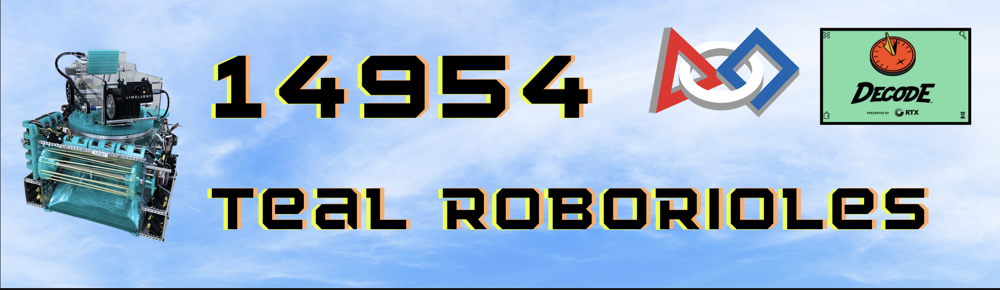
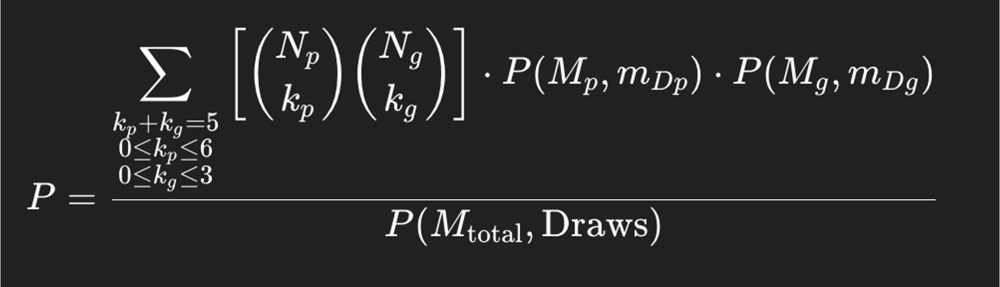
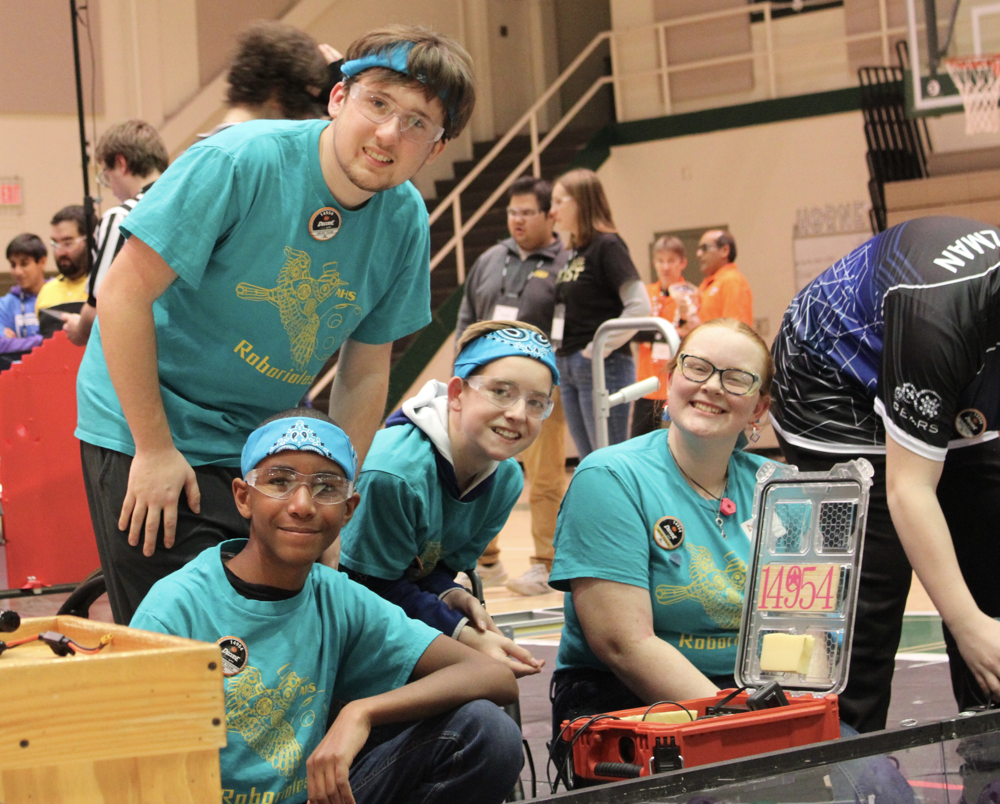
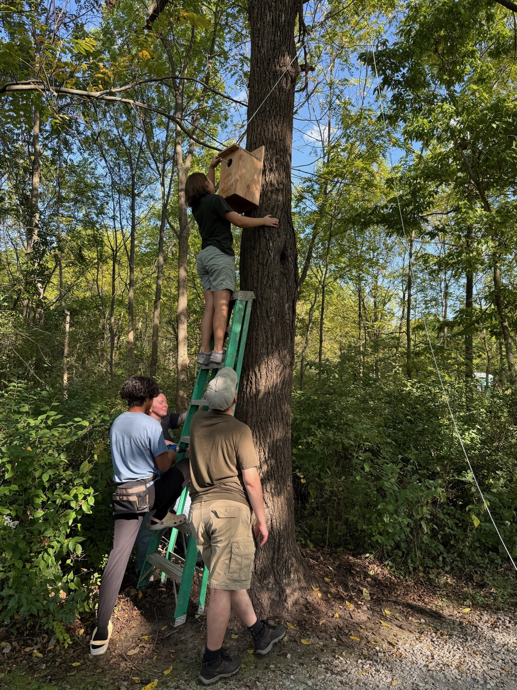

Our Mission
Hello, we are the Teal Roborioles, a FIRST Tech Challenge team based in Avon, Indiana. Our mission is to inspire the next generation of engineers and scientists while making a positive impact in our community.
- Comprehensive student-led leadership development
- Growing FIRST within Our Schools and State
- Defined roles both within build and outreach for all members
- Creating community within areas of FIRST
- Teaching skills to new students




Strategy
This year our team decided to prioritize scoring more artifacts over scoring motifs.
We used Excel and the following formula to calculate the probability of scoring at least 5 out the 9 artifacts in the tunnel correctly without replacement. Through our work we found the chance to be roughly 63%.
Our Box
- Materials:
- - wood
- - wood screws
- - wood shavings
Step 1
- 1) First, form groups of two or three. Each girl gets an owl sheet, and each group gets an owl card.
- 2) In groups, read the cards. Then, draw the owl and write down two fun facts on the sheet.
- 3) When everyone is finished, display the owl drawings in a gallery and have the girls walk around to view; this can be on a table or on a wall.
- 4) Regroup and discuss.

Other Ways to Help
- Advocate for habitat protections in your community.
- Protect existing habitats
- Plant native plants to support local ecosystems.
- Avoid using pesticides; rat poisons can harm owls by poisoning their food supply.
- Help clean up your community; litter can disrupt owls and their ecosystems.
Sponsors
- Cornell Lab Bird Guide allaboutbirds.org
- Macaulay Library Media Archive macaulaylibrary.org
- Nest Watch Box Plans nestwatch.org